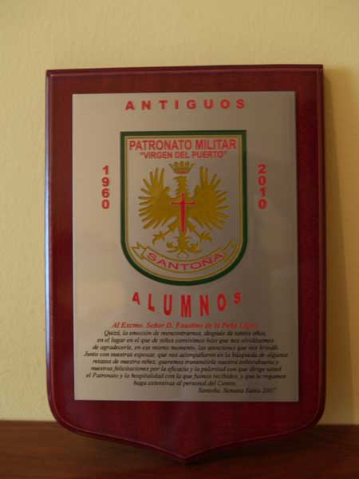

Texto: Al Excmo. Sr. D. Faustino de la Peña López.
Quizá, la emoción de reencontrarnos, después de tantos años, en el lugar en el que de niños convivimos hizo que nos olvidásemos de agradecerle, en ese mismo momento, las atenciones que nos brindó. Junto con nuestras esposas, que nos acompañaron en la búsqueda de algunos retazos de nuestra niñez, queremos transmitirle nuestra enhorabuena y nuestras felicitaciones por la eficacia y la pulcritud con que dirige usted el Patronato y la hospitalidad con la que fuimos recibidos, y que le rogamos haga extensivas al personal del Centro. Santoña, Semana Santa 2007
 |